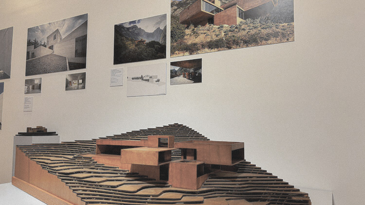
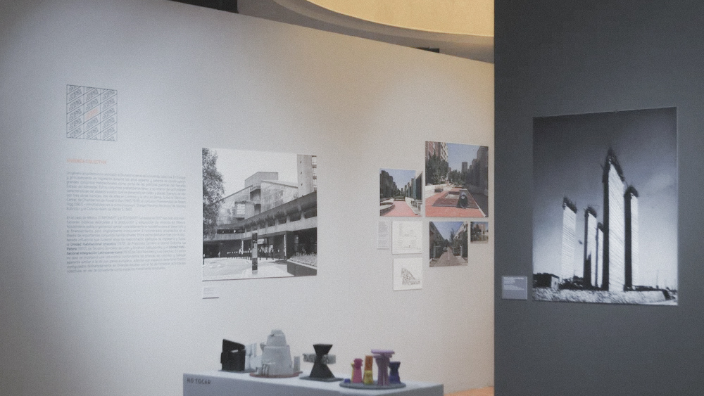
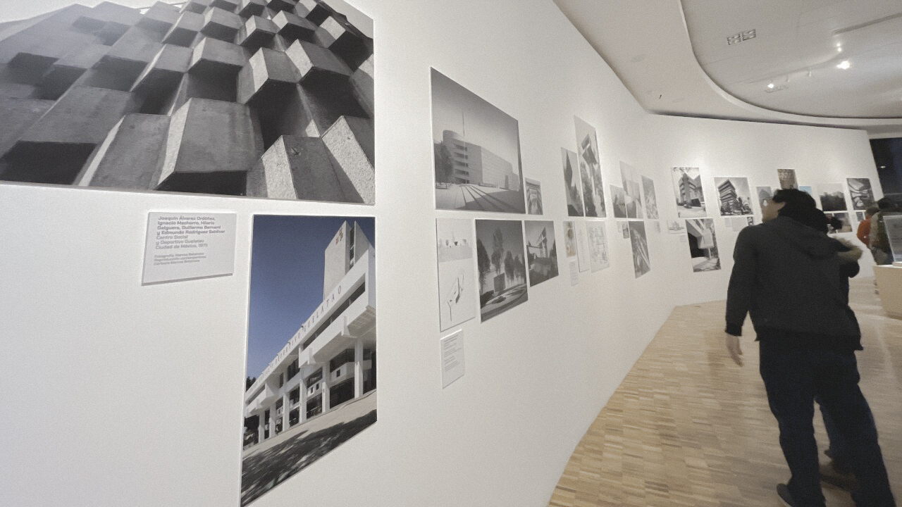
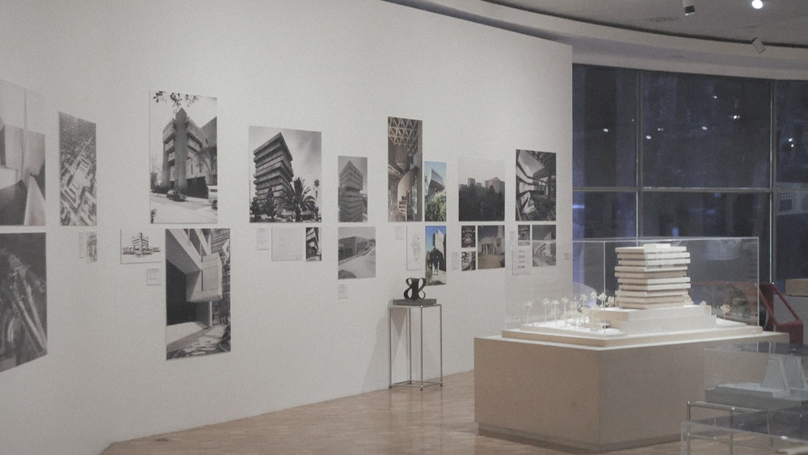
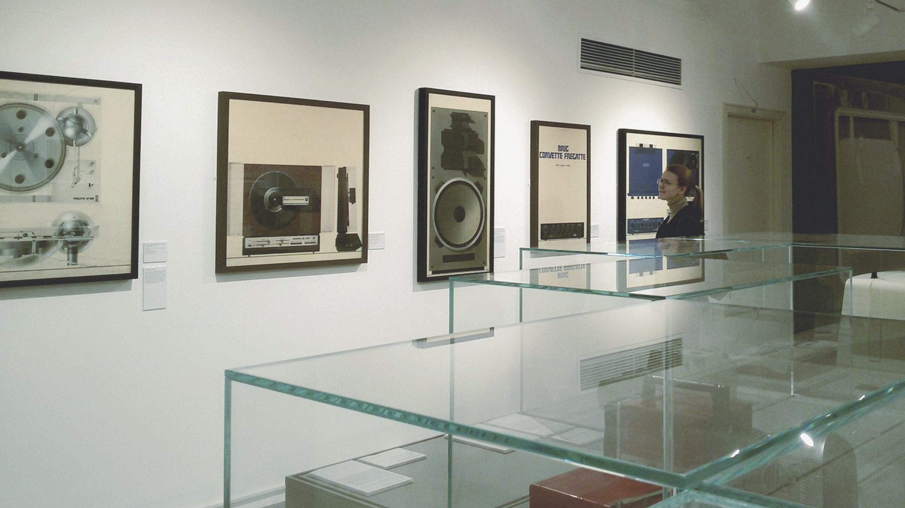

Artista digital y diseñador gráfico
Obras que exploran la estética de los videojuegos retro aplicada a técnicas pictóricas tradicionales.
Inauguración: 15 de septiembre, 19:00 hs.

Diseñadora UX/UI
Instalación interactiva sobre cómo interactuamos con pantallas y dispositivos en la vida cotidiana.
Del 22 al 30 de septiembre

Curator: Andrés López, diseñador gráfico
Cinco diseñadores reimaginan la cartelería urbana con nuevas tecnologías y materiales.
Octubre 5-20

Fotógrafa de arquitectura
Registro fotográfico de espacios de trabajo contemporáneos y estudios de diseño.
Charla el 28 de octubre

Diseñador tipográfico
Exploración de las letras en la señalética de la ciudad y su evolución digital.
Noviembre 10-25
Nuestra sección de arte visual se enfoca en creadores que trabajan en la intersección entre arte, diseño y tecnología. Buscamos artistas que utilicen herramientas digitales, que reflexionen sobre la cultura visual contemporánea y que dialoguen con el diseño gráfico, la comunicación visual y las nuevas formas de crear imágenes en el siglo XXI.
El programa incluye desde ilustradores digitales hasta diseñadores gráficos que experimentan con sus propuestas más autorales, fotógrafos de arquitectura y espacios de trabajo, y artistas que exploran la estética de videojuegos, interfaces y pantallas. Nos interesa el arte que surge del mundo del diseño y viceversa.
Privilegiamos propuestas que documenten o reinterpreten la cultura visual urbana: desde la señalética y tipografía callejera hasta la estética de las redes sociales y aplicaciones. Creemos que estos lenguajes visuales definen gran parte de nuestra experiencia estética cotidiana y merecen ser explorados desde una perspectiva artística.
Las exposiciones incluyen tanto obra tradicional (pintura, dibujo, fotografía) como instalaciones interactivas y arte digital. Esta diversidad técnica refleja cómo los artistas contemporáneos combinan medios analógicos y digitales sin jerarquías, creando un lenguaje híbrido que caracteriza nuestra época.
Complementamos las muestras con charlas técnicas, workshops sobre software creativo y encuentros donde artistas y diseñadores intercambian experiencias. Estos eventos permiten que el público acceda tanto al aspecto estético como a los procesos técnicos y conceptuales detrás de cada obra.